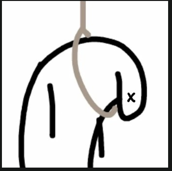

Buenos días, mi amor. ❤️
Y sí... al final sí lo hice jajaja. 😅 Me tardé un poco porque, aunque quería hacerlo en Python, terminé haciéndolo de otra forma. Pero fue por una buena causa.
Quería escribirte esto porque hay cosas que no quiero dejar guardadas y prefiero que las sepas.
Primero que nada... perdón.
No estoy escribiendo esto para que me tengas pena ni para hacer más grande la situación. Lo hago porque te amo y porque siento que te debo estas palabras.
Hay algo que todavía se me viene a la cabeza de vez en cuando: el día que me bloqueaste de todos lados. La verdad ese día fue muy feo para mí. Sentí un vacío enorme porque de verdad pensé que te había perdido, y no quiero que eso vuelva a pasar nunca más.
También quiero que sepas algo que para mí es importante. Yo no reciclo sentimientos. Sé que ese día pensaste eso por una frase, pero crème que cuando te dije esas palabras salieron de mi corazón. No estaba pensando en nadie más. Estaba pensando en ti. Y si aun así te hice sentir mal, lo siento muchísimo.
Hay veces en las que siento que todavía no sé quererte como tú mereces. No porque no quiera, sino porque para mí todo esto es nuevo. Tú sabes que nunca había tenido una relación de verdad. Nunca había aprendido a ser pareja de alguien, y aunque eso no justifica mis errores, sí explica por qué todavía estoy aprendiendo muchas cosas.
Pero si hay algo que tengo clarísimo es esto: te estoy amando siendo yo. Sin aparentar. Sin fingir. Sin intentar ser alguien que no soy. Simplemente siendo Leonardo.
Y también quiero contarte algo que tú ya sabes, pero que nunca te expliqué con estas palabras.
Si alguna vez soy brusco, parezco frío o digo las cosas de una forma que no es la mejor, no es porque no te quiera. De hecho, es todo lo contrario.
Tú sabes que una de las cosas que más miedo me da es volver a sentirme ingenuo. Y ese miedo no nació por una ex ni por una relación pasada. Nació por personas que eran mi propia familia. Personas en las que confiaba muchísimo y que terminaron engañándome, traicionándome y apuñalándome por la espalda.
Después de vivir eso, sin darme cuenta empecé a levantar barreras. Aprendí a protegerme antes de que me lastimaran otra vez. Y aunque muchas veces parezca que reacciono con dureza, la verdad es que por dentro soy todo lo contrario.
Pero contigo ya no quiero vivir así.
No quiero que pagues por heridas que tú nunca me hiciste.
No quiero que esos miedos arruinen algo tan bonito como lo que estamos construyendo.
Por eso estoy cambiando. No porque me lo estés exigiendo, sino porque quiero hacerlo. Porque quiero que la persona que esté a tu lado sea alguien que te dé tranquilidad y no dudas.
Quiero aprender a tratarte mejor.
Quiero aprender a demostrarte más lo mucho que te amo.
Quiero que poco a poco desaparezcan esos miedos que todavía cargo.
Y sí... quiero que te quedes conmigo.
Porque me importas muchísimo.
No sabes cuánto.
Nunca pienses que eres una molestia para mí.
Nunca.
Al contrario, desde que llegaste a mi vida me has hecho sentir cosas que hace muchísimo tiempo no sentía. Me haces sentir querido. Me haces sentir importante. Me haces sentir amado.
Y créeme... esa sensación vale muchísimo para mí.
Gracias por llegar a mi vida.
Gracias por elegirme.
Gracias por quererme.
Y pase lo que pase, gracias por amarme como lo has hecho hasta ahora.
Yo también quiero darte todo de mí.
Quiero cuidarte.
Quiero acompañarte cuando tengas un mal día.
Quiero celebrar contigo cuando estés feliz.
Quiero estar orgulloso de cada logro tuyo.
Quiero ser un lugar donde puedas sentir paz.
En serio, me estoy esforzando por cambiar. Lo hago por mí, sí, pero también porque creo que lo nuestro vale la pena.
Perdón por las veces en las que he sido bruto o no he sabido demostrarte todo lo que siento. Nunca ha sido por falta de amor. Al contrario. Es porque te amo tanto que hasta me da miedo hacerlo mal. Pero ya no quiero seguir viviendo con ese miedo. Quiero amarte con todo lo que soy.
Si algún día discutimos, no quiero que eso signifique alejarnos. Quiero que aprendamos a hablar, a escucharnos, a entendernos y a resolver las cosas juntos. Quiero que los dos sintamos que siempre podemos volver a encontrarnos después de cualquier diferencia.
No prometo ser perfecto porque no lo soy. Seguramente seguiré llegando tarde alguna vez o cometeré errores tontos. Pero sí puedo prometerte algo: Nunca voy a engañarte. Nunca voy a mentirte. Nunca voy a traicionar tu confianza. Eso jamás.
Porque el amor que siento por ti es real. Y porque desde que te conocí tuve una idea muy clara en mi cabeza: quiero hacerte muy feliz. Quiero seguir creciendo contigo. Quiero seguir aprendiendo contigo. Y si tú también lo quieres... me haría muy feliz que algún día pudiera llamarte oficialmente mi novia.
Gracias por leer hasta aquí. Espero que hayas descansado muy bien, mi vida.
Te amo muchísimo, Wendy. Más de lo que a veces las palabras me alcanzan para explicar. ❤️

"me perdonas o procedo a "
🎵 una playlist para mi vida ya que estoy muy camote de ella
"siempre te voy a dedicar mis enanitos verdes siempre, y dejemos nuestro pasado, yo quiero vivir contigo mi vida el presente y el futuro, eres muy calidad eso me encanta contigo, no siento frio cuando estoy contigo, cuando cuando estoy tan pendejo que no me seco por completo mi cabello pero eso ya no es tu culpa JAJAJAJ, pero te dedico esta parte de la cancion.....espero te guste"
"se que eres fanatica de Jose madero pero bueno se que tambien la deviste escuhcar pero a un asi te la dedico porque siempre quiero que seas vos, tu eres la razon por la que no soy logico contigo,,,, soy bobo por usted corazon..."
"se que tambien la escuchaste se que si.... pero decirte que no seas tan ciega estoy bien ojete crj... ajjajaja lo que si quiero decirte es que si me sacriifico por usted y a al primera.... tu haces que valga vivir esta horrenda vida... lo haces brillar"
"cuando te tengo a mi lado y es tan obvio lo nervioso que estoy que no te miro jajajaj es que estoy todo sonrojado, y ya nada mas me importa cuando estoy contigo y se que es real lo nuestro..."
"y se que esta cancion en tu vida la escuchaste pero solo decirte que me mueror por tus ojos por esa mirada que me tiene loco, de verdad que me encantas bastante mi vida..."
y espero te haya gustado las canciones los parrafos que elegi mi vida....y de verdad que te amo y un monton, yo aqui programando no me vi AJJAJAJAJ